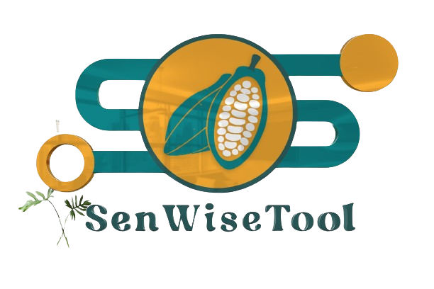

A new SENIMA's Company technologie with the purpose of improving the digitalisation internal inspection, tracability and Mapping
SenWiseTool est une plateforme en ligne payante et open-source qui permet de créer et de gérer des enquêtes, des sondages et des collectes de données via des téléphones mobiles. Elle est principalement utilisée pour les projets de recherche, les évaluations et les suivis dans les domaines de la santé, de l'éducation, de l'environnement et du développement social.
SenWiseTool est une plateforme polyvalente qui peut être utilisée dans divers domaines pour collecter, analyser et partager des données. Voici quelques exemples d'utilisation de SenWiseTool :
Environnement
Développement social
Recherche
Santé